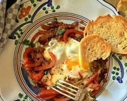
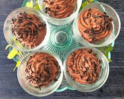
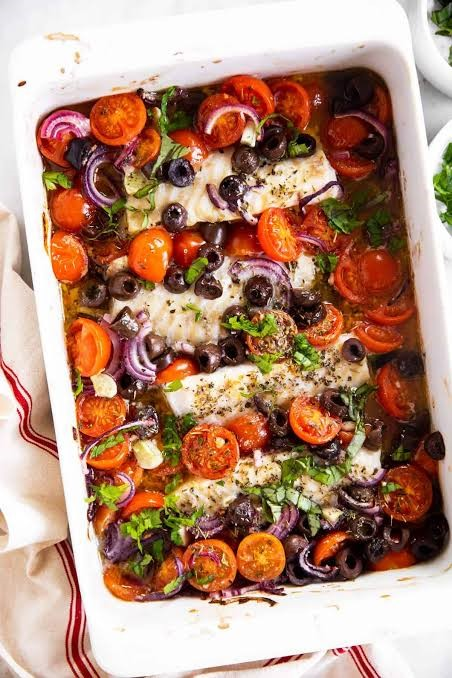
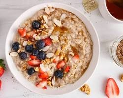
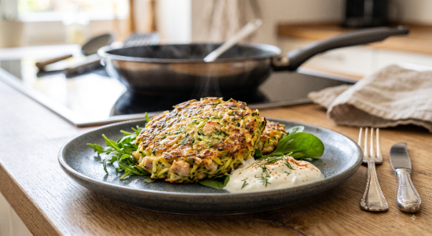
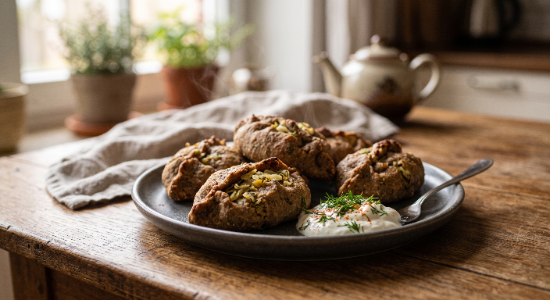
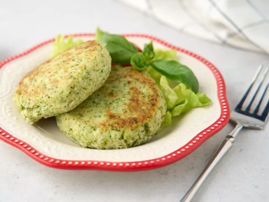

Полезные рецепты

Завтрак • Низкий ГИ
Шакшука с томатами и зеленью
Шакшука — это яичница, запеченная в густом, сочном соусе из тушеных овощей. Ингредиенты: • Яйца куриные — 2-3 шт. • Спелые помидоры — 2 шт. (или половина банки томатов в собственном соку) • Болгарский перец (красный или желтый) — 1 шт. • Репчатый лук — 1/2 небольшая головка • Чеснок — 1 зубчик • Оливковое масло — 1 ч. л. • Свежая зелень (петрушка, кинза или укроп) — небольшой пучок • Специи: зира (кумин), паприка, черный перец, соль — по вкусу
Обеды
Минестроне с куриными фрикадельками и стручковой фасолью
Ингредиенты (на кастрюлю 2 л): Для фрикаделек: Фарш из куриной грудки или индейки — 300 г Яйцо — 1 шт. Соль, черный перец, сушеный чеснок — по вкусу Для супа: Стручковая фасоль (свежая или замороженная) — 150 г Кабачок / цукини — 1/2 шт. (около 100 г) Стебель сельдерея — 1–2 шт. Болгарский перец — 1/2 шт. Помидор — 1 шт. (или 2 ст. л. томатов в собственном соку) Репчатый лук — 1/2 головки Оливковое масло — 1 ч. л. (для пассеровки) Свежая зелень (петрушка, базилик, укроп) — пучок Вода или легкий бульон — 1.2–1.5 л 👩🍳 Пошаговое приготовление: Делаем фрикадельки: Смешай фарш с яйцом, солью и специями. Сформируй небольшие шарики размером с грецкий орех. Овощная база: Лук, сельдерей, болгарский перец и кабачок нарежь аккуратными небольшими кубиками. Стручковую фасоль разрежь на кусочки по 2 см. Пассеровка: В кастрюле с толстым дном разогрей оливковое масло. Выложи лук, сельдерей и болгарский перец, поссеруй на медленном огне минут 5 до мягкости. Добавь мелко нарезанный помидор и потуши еще 2–3 минуты. Варка: Залей в кастрюлю воду (или бульон) и доведи до кипения. Аккуратно опусти фрикадельки по одной. Вари на среднем огне минут 7–10, снимая пену. Добавляем овощи: Опусти в суп кабачок и стручковую фасоль. Посоли, поперчи и вари еще 7–8 минут. Овощи должны остаться слегка хрустящими (al dente), чтобы сохранить максимум клетчатки. Подача: Сними суп с огня, засыпь свежую зелень, накрой крышкой и дай настояться 10 минут.В целой тарелке такого супа содержится всего около 0.5 ХЕ. Полезный суп помогает поддерживать баланс микроэлементов, легко усваивается и дарит долгую сытость без тяжести.

Десерты
Домашнее шоколадно-кремовое пломбир-мороженое из авокадо и сливок
Ингредиенты: Спелое авокадо (мягкое!) — 1 шт. Сливки 30–33% (или жирные кокосовые сливки) — 100 мл Какао-порошок (натуральный, без сахара) — 2 ст. л. Сахарозаменитель (эритрит или стевия) — по вкусу (примерно 1,5–2 ст. л. эритрита) Лимонный сок — 1 ч. л. (чтобы авокадо не темнело) Ванилин — на кончике ножа 👩🍳 Пошаговое приготовление: Подготовка: Авокадо очисти от кожуры и вынь косточку. Нарежь мякоть кусочками. Смешивание: В чашу блендера переложи авокадо, влей холодные сливки, добавь какао, сахарозаменитель, лимонный сок и ванилин. Взбивание: Взбей всё блендером до абсолютно гладкой, однородной, глянцевой кремовой массы. Вкуса авокадо вообще не останется — какао и ваниль его полностью перебьют, останется только чистый шоколадный пломбир! Заморозка: Выложи массу в небольшой контейнер или силиконовые формочки для мороженого. Отправь в морозилку на 1,5–2 часа. Маленький секрет: чтобы мороженое не превратилось в ледяной глыб, перемешай его вилкой пару раз за время заморозки (каждые 30-40 минут). Подача: Достань за 5–10 минут до еды, чтобы оно слегка подтаяло и стало сочным и нежным. 📊 Плюсы для твоего датчика Aidex: Ноль сахара: Эритрит и стевия не усваиваются организмом и имеют нулевой гликемический индекс.

Рецепт №4
Сочная треска по-галисийски, запеченная с болгарским перцем, томатами и оливками
Ингредиенты (на 2 порции): Филе трески (или трески/хек/минтай) — 400 г Помидоры черри (или обычные спелые томаты) — 150 г Болгарский перец (красный или сладкий) — 1 шт. Оливки или маслины без косточек — 8–10 шт. Красный лук — 1/2 шт. Чеснок — 2 зубчика Оливковое масло extra virgin — 1,5 ст. л. Лимонный сок — 1 ст. л. Свежая петрушка или базилик — пара веточек Орегано, сушеный базилик, соль, черный перец — по вкусу 👩🍳 Пошаговое приготовление: Подготовка рыбы: Филе трески сухими салфетками обсуши, сбрызни лимонным соком, слегка посоли и поперчи. Овощное «покрывало»: Помидоры разрежь пополам (если черри) или кубиками, болгарский перец и красный лук нарежь тонкими полукольцами, оливки — колечками. Чеснок поруби ножом. Соус-маринад: В глубокой пиале смешай оливковое масло, чеснок, орегано, сушеный базилик, щепотку соли и перца. Сборка: В форму для запекания выложи кусочки трески. Вокруг рыбы и прямо поверх нее выложи смешанные овощи и оливки. Полей всё подготовленным ароматным оливковым маслом со специями. Запекание: Отправляй в разогретую до 190°C духовку на 18–20 минут (рыба готовится очень быстро, не пересуши!). Подача: Присыпь свежей порубленной петрушкой или базиликом и подавай горячей прямо из формы.Практически 0 ХЕ: В порции такой рыбы с овощами содержится не более 0,5 ХЕ (в основном за счет томатов и перца).

Рецепт №5
Сливочный геркулес с орехами и корицей
Ингредиенты (на 1 порцию): Овсяные хлопья монастырские / геркулес (варка 15–20 мин) — 40 г (около 3-4 ст. л. сухих хлопьев) Вода — 200 мл Сливки 10% или 20% — 2 ст. л. (для сливочного вкуса в самом конце) Грецкие орехи — 3–4 половинки (слегка измельчить) Семена льна или чиа — 1 ч. л. Молотая корица — 1/3 ч. л. Сливочное масло — 5 г Сахарозаменитель (эритрит или стевия) — по вкусу Щепотка соли 👩🍳 Пошаговое приготовление: Варка основы: В небольшом сотейнике вскипяти воду, подсоли и засыпь овсяные хлопья. Убавь огонь до минимума, накрой крышкой и вари около 15 минут, периодически помешивая, пока хлопья не станут мягкими. Сливочный вкус: За 2 минуты до готовности влей сливки, добавь корицу, сахарозаменитель и кусочек сливочного масла. Перемешай, сними с огня, накрой крышкой и дай каше «отдохнуть» и настояться 5 минут. Подача: Выложи горячую кашу в красивую пиалу. Сверху присыпь измельченными грецкими орехами и семенами льна.

Рецепт №6
Ванильная Панна-котта с ягодным соусом
Ингредиенты (на 2 порции): Сливки 20% или 33% — 200 мл Желатин (быстрорастворимый) — 5 г (около 1 ч. л.) Вода (холодная) — 30 мл (для замачивания желатина) Ванилин или стручок ванили — на кончике ножа Сахарозаменитель (эритрит или стевия) — по вкусу (примерно 1 ст. л. эритрита) Свежие или замороженные ягоды (клубника, малина, голубика) — 50 г 👩🍳 Пошаговое приготовление: Желатин: Залей желатин холодной водой в пиале и оставь на 5–10 минут, чтобы он набух. Сливочная основа: В небольшой сотейник вылей сливки, добавь сахарозаменитель и ванилин. Прогрей почти до кипения (примерно до 70–80°C), но не кипяти. Сними с огня. Растворение: Добавь в горячие сливки набухший желатин и тщательно перемешивай до полного растворения. Разливка: Разлей сливочную массу по креманкам. Дай остыть до комнатной температуры, а затем отправь в холодильник на 2–3 часа. Ягодный топпинг: Ягоды размни вилкой. Выложи ягодный соус сверху на застывшую панна-котту перед самой подачей.
Рецепт №7
Лодочки из цукини с индейкой и сыром
Ингредиенты (на 2 порции): Цукини или молодые кабачки — 2 шт. Фарш из филе индейки — 300 г Болгарский перец — 1/2 шт. Помидор — 1 шт. Чеснок — 1–2 зубчика Твёрдый сыр — 50 г Оливковое масло — 1 ст. л. Зелень — небольшой пучок Соль, чёрный перец, сушёный орегано — по вкусу Приготовление: Подготовка овощей: Промой цукини, разрежь вдоль пополам. Ложкой аккуратно вынь мякоть, чтобы получились плотные «лодочки». Вынутую мякоть мелко нарежь. Начинка: Нарежь кубиками перец и помидор. На сковороде с оливковым маслом обжарь фарш 5–7 минут. Добавь мякоть цукини, перец, помидор и чеснок. Туши ещё 5 минут. Фарширование: Выложи кабачковые «лодочки» в форму для запекания и наполни фаршем с овощами. Запекание: Поставь в разогретую до 180°C духовку на 20–25 минут. Посыпь натёртым сыром и верни в духовку еще на 5 минут.

Рецепт №8
Кабачковые вафли-оладьи с курицей и зеленью
Ингредиенты (на 2 порции): • Молодой кабачок или цукини — 1 шт. (около 200 г) • Куриное филе (или отварная грудка) — 150 г • Яйцо — 1 шт. • Овсяные хлопья (смолотые) или овсяная мука — 2 ст. л. • Чеснок — 1 зубчик • Укроп и петрушка — небольшой пучок • Соль, чёрный перец — по вкусу • Растительное масло — 1 ч. л. (для смазывания сковороды) Приготовление: 1. Подготовка овощей: Натри кабачок на крупной терке. Посоли слегка и дай постоять 5 минут, затем руками хорошо отжми лишний сок. 2. Начинка: Куриное филе нарежь очень мелкими кубиками (или поруби блендером). Измельчи зелень и чеснок. 3. Замес: В миске смешай кабачок, курицу, яйцо, зелень, чеснок, перец и овсяную муку. Перемешай до однородности. 4. Жарка: Разогрей антипригарную сковороду, смажь каплей масла. Выкладывай массу столовой ложкой, формируя небольшие котлетки-оладьи. 5. Готовка: Накрой крышкой и жарь на медленном огне по 4–5 минут с каждой стороны. Пищевая ценность (на 1 порцию): • Углеводы: ~7 г (всего ~0.5 ХЕ) • Белки: ~20 г • Жиры: ~6 г • Калорийность: ~160 ккал Отлично идет с ложкой 10% сметаны или домашним соусом из греческого йогурта с зеленью!
Рецепт №9

Рецепт №10

Рецепт №11
Реклама / Партнёрам №1

Перейти к продуктам ↗
Полезные продукты и кухонная утварь
Рекомендованные ингредиенты, посуда для запекания и техника для здорового питания.
Кулинарные истории
Из жизни
Утренний чай и неспешные мысли
О важности утреннего спокойствия и пользе правильных привычек.
Раз уж мы устроились с кружечкой чая, расскажу одну историю, которая заставит улыбнуться любого, кто хоть раз пробовал погрузиться в тонкости чайной культуры. История эта про один из самых мифических и легендарных напитков — китайский чай Пуэр. Несколько лет назад, когда китайская чайная культура только набирала популярность, один парень решил удивить своего отца — заядлого любителя крепкого черного чая с сахаром. Парень купил настоящий, дорогой коллекционный блин выдержанного Шу Пуэра. Красивая упаковка, каллиграфия, выдержка больше десяти лет — в общем, солидный подарок. Приходит он к отцу, торжественно вручает этот «чайный блин» и начинает увлеченно рассказывать: — Папа, это не просто чай! Это Шу Пуэр! Его выдерживают годами, у него землянистый, древесный аромат, нотки сухофруктов и орехов. Его надо заваривать проливами, в специальном глиняном чайнике, смакуя каждый глоток! Отец послушал, с уважением кивнул, забрал подарок и убрал в кухонный шкаф. Проходит неделя. Сын снова приезжает в гости и с порога спрашивает: — Ну как, папа, попробовал тот самый Пуэр? Как тебе древесно-землянистые нотки? Отец смотрит на него немного растерянно, чешет затылок и говорит: — Слушай, сынок... Заварка, конечно, мощная! Я отломал от этого блина кусок, бросил в наш трехлитровый эмалированный чайник, проварил как следует, засыпал пять ложек сахара... На вкус — ну pure земля! Но знаешь, как бодрит? Я после этого чая за два часа весь огород перекопал, сарай починил и еще к соседу съездил на велосипеде! Правда, отскребать этот «спрессованный торф» от стенок чайника я замучился... Сын, конечно, сначала схватился за голову — дорогой чай заварили как чифир в эмалированной кастрюле! Но потом они вместе хохотали до слез. Ведь главное правило хорошего чая — чтобы он приносил удовольствие и заряд бодрости, а в каком чайнике его заварили — это уже дело второстепенное!
Традиции
Забавные истории
Кулинарные традиции за общим столом.
В 1860-х годах в Британии началась настоящая «чайная лихорадка». Тот, кто первым привозил в Лондон свежий урожай чая из Китая, мог продать его с огромной наценкой и получить колоссальную прибыль. Так родились знаменитые чайные гонки клиперов — быстрых парусных кораблей. Самая легендарная гонка состоялась в 1866 году. Чайные клиперы «Таипинг» и «Ariel» подняли паруса в Китае практически одновременно. Они прошли в бешеном темпе 16 000 миль через океаны и штормы, не уступая друг другу ни мили. Спустя 99 дней пути оба корабля с разницей всего в несколько минут вошли в устье реки Темзы в Лондоне! Капитаны понимали, что ситуация анекдотичная: если они начнут соперничать в порту за право первой разгрузки, начав судиться или устраивать драку, цена на чай упадёт для обоих. В итоге капитаны поступили чисто по-джентльменски: Сообща договорились разделить премию за лучший чай пополам. Зашли в порт вместе и дружно отправились в паб обмыть финиш. Так обычное стремление привезти свежие чайные листья к утреннему столу превратилось в одну из самых захватывающих и курьёзных морских регат в истории!